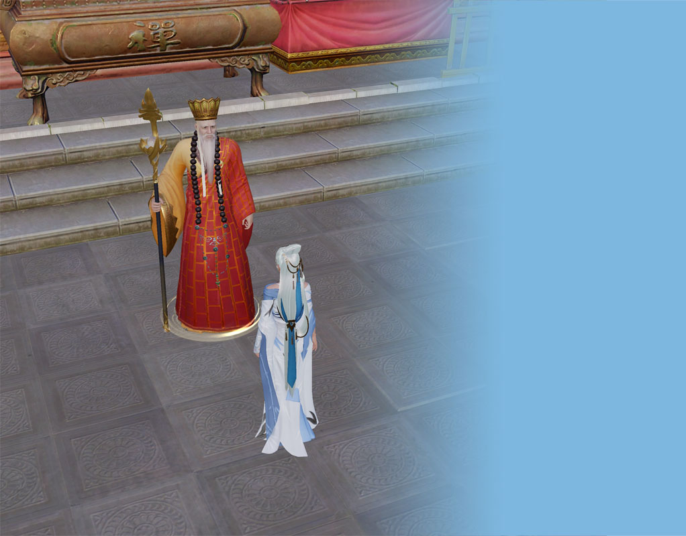
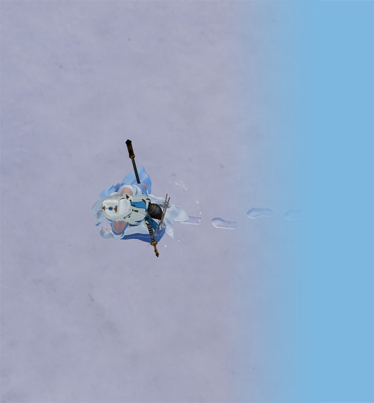

丐叔叔❤秀阿姨
按键盘 "↓" 开始倾听我的告白
2018年9月23日之前的丐叔叔一直是一个人生活，享受着孤独，也憧憬着爱情

一个人的街头
一个人的山岗
一个人看风景
但他依然乐观，微笑着，等待着...
生活难免有风风雨雨
他总是能够轻松的应对

并且面带阳光、自信的微笑
生活也不会总是一帆风顺

但他每次都能勇敢的面对
随时准备接受生活的挑战
他不羡慕大雄的小叮当有异次元口袋
他不羡慕夏尔的塞巴斯是万能的
他不羡慕小樱身边的小可拥有魔法
他只是羡慕它们不会孤单一人
丐叔叔的爱情又在哪里呢？
在镜子里面吗？他不敢相信。

他去问大师，
我的爱情在哪里？
大师告诉他，
也许就在不远的地方。

于是丐叔叔一个人继续向前走，
走在茫茫的雪地上。

直到有一天丐叔叔与秀阿姨相遇了
每天丐叔叔都会去找秀阿姨

然后两个人一起玩

他们一起看秀坊瘦西湖那载满世间柔情的汪汪湖水
一起在绿肥天青的成都山顶闲看云卷云舒

一起在波光粼粼的映月湖边静听月夜
光华夺目的阳光不仅照亮了大地，也照亮了他的心田
他们每晚都会聊好久好久

秀阿姨都会听着丐叔叔的声音睡着
直到很晚丐叔叔才会挂断电话
然后高兴的进去梦乡，希望梦到秀阿姨
因为秀阿姨的出现，丐叔叔的脸上有了更加灿烂的笑容

丐叔叔好高兴
每当丐叔叔想秀阿姨了，
他会掏出手机，
看看有没有她的消息。
他会打开他们的聊天记录看一下，
不管是什么样的对话，
始终有种甜蜜的感觉，
就像，
巧克力的味道。
他会把目光投到很远的地方
却不知道在想些什么...
他会想，
秀阿姨是不是会想丐叔叔呢？
哪怕，
只有一秒钟的时间...

丐叔叔喜欢听秀阿姨分享她生活中的点点滴滴


喜欢秀阿姨告诉他不曾告诉别人的心情
这样，
他可以觉得在她的世界里，
他和别人不一样，
而他喜欢这种不一样。

丐叔叔喜欢秀阿姨

现在的他不再是小孩子，
褪去了幼稚，
他明白生活中存在很多他们无能为力的事。


他也很害怕时间，害怕风一吹他们就散了

听到一句很美的话：生命中有缝隙，才会透过阳光。
虽然害怕，
但是，
他也要去尝试。
异地不是距离，
他只是很想她。

他也梦想有一段长长久久的爱情，
不求轰轰烈烈，但求有始有终，细水长流。

可当爱情悄悄降临的时候，
还是不由得想要快点，
和她在一起。

他喜欢她可爱的样子，喜欢她悦耳的声音。
喜欢听她那一声“嗯↗↘”

他愿他们能像小溪流水一样，清澈、平静地流向远方

他希望每天都可以听到她的声音，
每天都可以这样聊下去。


他也怀念无话可说，
他希望他们度过了无话不说的阶段之后，
还能在一起，
无话可说，
却连沉默都值得回忆。
丐叔叔很幸福，因为他遇到了秀阿姨，他希望后面的每天都会是快乐的简简单单


世上的女孩千千万，有她一个就够了
I love you

按"Esc"键有惊喜
Copyright © 2018 未梦闲 All Rights Reserved.